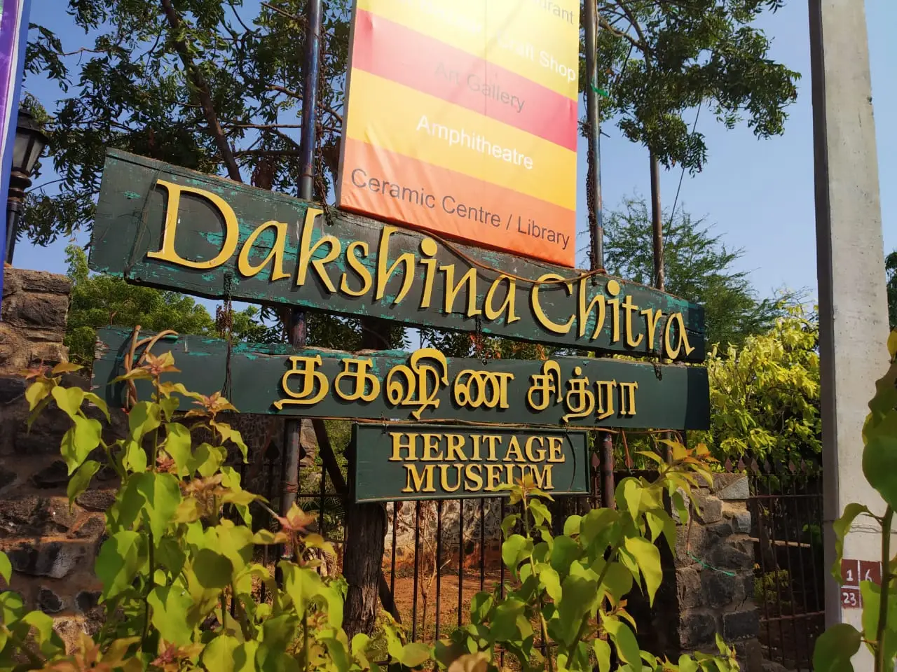
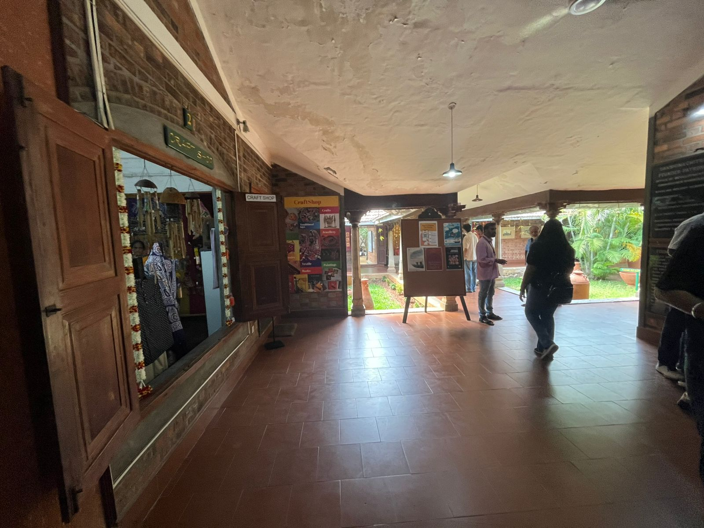
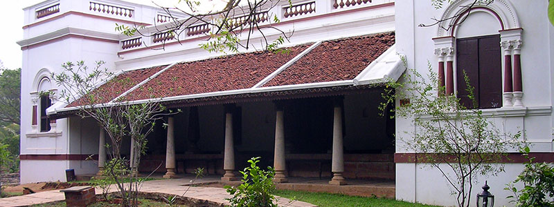
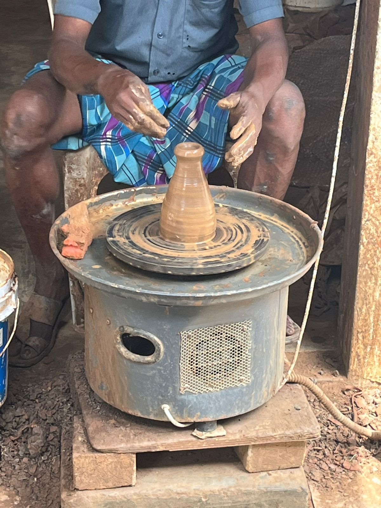
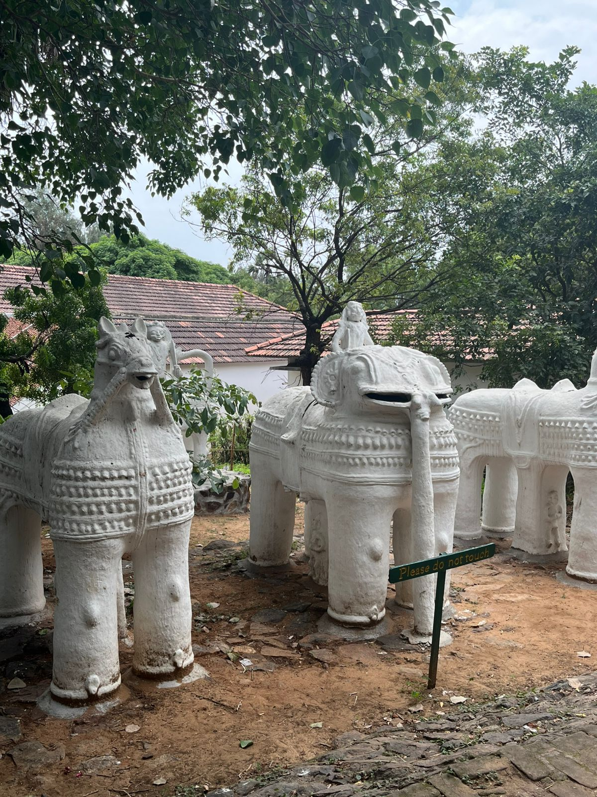
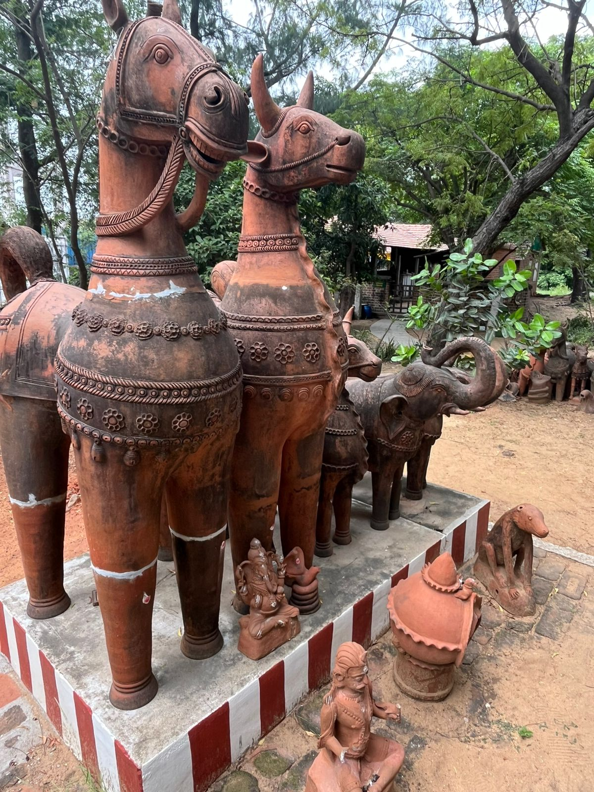
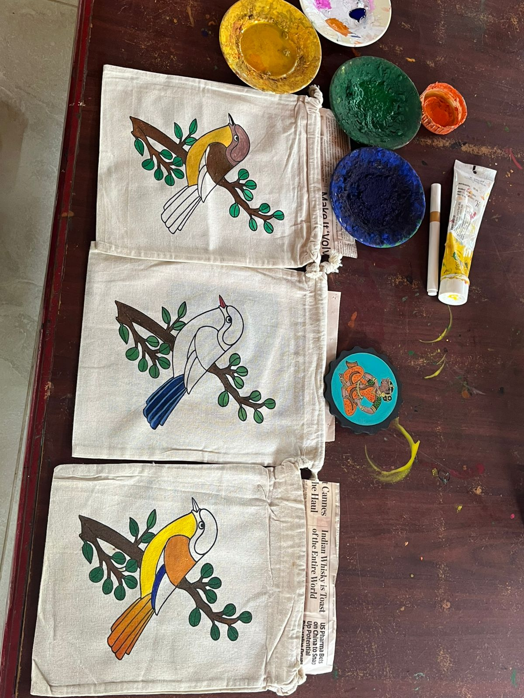

Introduction
This blog is about my visit to Dakshana Chitra,
a living museum located on the East Coast Road near Chennai.
Dakshina Chitra preserves the art, buildings, and culture of South India,
showing how people lived long ago. During my visit,
I saw traditional houses from different states, watched artisans making crafts like pottery and weaving,
and learned about local customs. I also walked through the courtyards and gardens,
which gave me a feel of the old South Indian lifestyle. Being a South Indian myself,
I enjoyed the visit and felt as if I were back in my hometown.
Main Body
1. Getting There & First Impressions
Dakshina Chitra is about 25 km from Chennai city centre along the
East Coast Road. The entry fee is ₹175 for Indian adults
and the museum is open from 10 AM to 6 PM (closed on Tuesdays).
- Distance from Chennai: ~25 km
- Entry Fee: ₹170 (Indian adults)
- Best time to visit: Morning or late afternoon
Entrance

Reception Area

2. Exploring the Heritage Houses
The best part of Dakshina Chitra is its heritage houses.
Each house shows the traditional style of a different South Indian state,
like Tamil Nadu, Kerala, Karnataka, and Andhra Pradesh.
As I walked around, I noticed the different designs, materials,
and decorations in each home.
From wooden pillars and terracotta roofs in Tamil Nadu houses to sloping
tiled roofs in Kerala homes, every house tells a story about how people lived in the past.
It felt like I went back in time and exploring the culture of South India.
Hindu Kerala House

Tamil Nadu Merchant House

3. Cultural Activities & Performances
One of my favorite parts of Dakshina Chitra was the cultural activities and performances.
Throughout the day, the museum has live demonstrations where artisans show traditional crafts like pottery,
weaving, and puppetry. Watching them work with such skill made me appreciate how much talent and patience
goes into these crafts.Visitors can also join hands-on activities, like coloring or drawing on cloth bags,
painting small crafts, or trying simple art projects. Doing these activities makes learning about the culture much
more fun because you get to take a piece of it home! Besides the performances, the museum has many artifacts on display,
such as old tools, musical instruments, household items, and traditional clothing. Each piece tells a story about
how people lived, worked, and celebrated in the past. Seeing these artifacts
up close made me feel a deeper connection to South Indian history and traditions.
Pottery Making

Artifacts


Painting

Leave a Comment